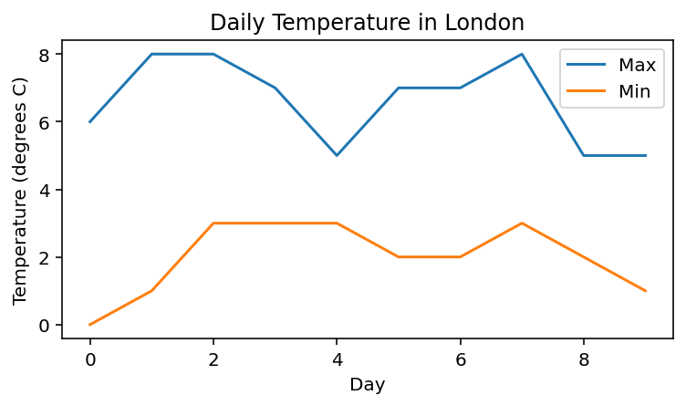

Exercises
2.4. Exercises#
Exercise 2.13
Use a for loop to produce the following output:
5, 7, 9, 11, 13, 151, 10, 100, 1000, 10000, 1000000, 1, 2, 0, 1, 2, 0, 1, 2(hint: use the%operator)
Exercise 2.14
Look up the predicted daily maximum and minimum temperatures for the next 10 days according to the BBC weather forecast.
https://www.bbc.co.uk/weather/2643743
Create two arrays containing the maximum and minimum temperatures and plot them as two separate lines on a line graph, including axis labels and title. Look up how to add a legend in the Matplotlib documentation.
{kind=link}
Exercise 2.15
The Belousov–Zhabotinsky reaction, or BZ reaction, is a chemical reaction which exhibits non-equilbrium dynamics. Under certain conditions, the BZ reaction results in oscillatory behaviour, as demonstrated in this video.
The BZ reaction can be modelled by the following equations, where \(X_i\) and \(Y_i\) are the concentrations of the two reactants X (red) and Y (colourless) at timestep \(i\).
where \(k_1=0.2\), \(k_2 = 0.4\), \(k_3 = 0.1\) and \(k_4 = 0.3\). The initial concentrations are zero and each timestep has a duration of one second.
Write code to calculate \(X_i\) and \(Y_i\) for the first \(300\) seconds. (Hint: you can use your answer to Exercise 2.8 as a template).
On on set of axes, plot a graph of \(X\) and \(Y\) against time, an in another on another plot \(Y\) against \(X\). Check that your plots look like the examples below. Notice how both \(X\) and \(Y\) reach a steady-state.
Keeping the other parameters fixed, experiment with different values of \(k_1\) between \(0.1\) and \(0.3\). For what range of values of \(k_1\) does the reaction reach a steady-state, and for which values dos it exhibit sustained oscillations?